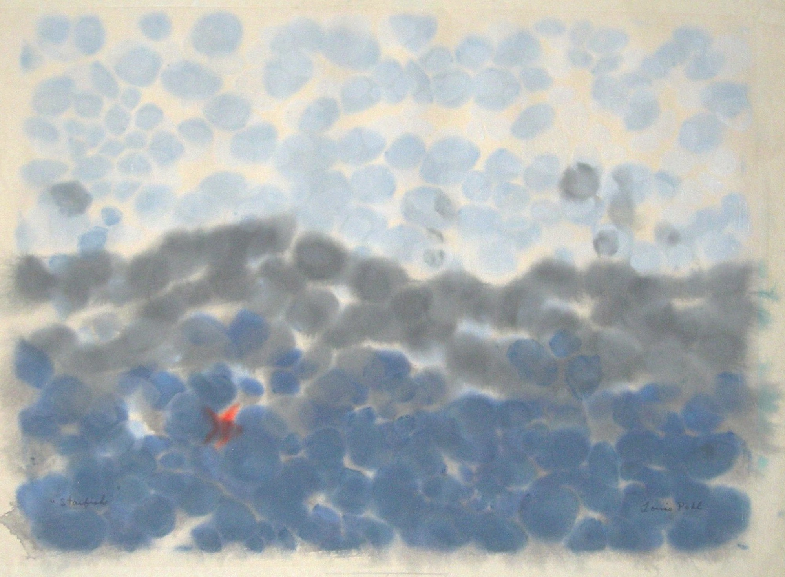

Louis Pohl
1915 – 1999
Artist Biography
Louis Pohl was born in Cincinnati, Ohio but became perhaps the leading figure in Hawaiian art in the latter half of the twentieth century. He studied at the Art Academy of Cincinatti and, after war service, was invited in 1946 to start a professional art school at the Honolulu Art Academy. There he became hugely influential in training up a new generation of artists, but also in terms of his own inventive printing techniques. Pohl’s work reflected his affection for the simple things in life, such as birds, sunrises and beach scenes, which he rendered in complex and vibrant images. In 1994 he was declared a “Living Treasure” by the State Legislature. His works are held by many Hawaiian institutions including the Honolulu Academy of Arts and the State Foundation for Culture and the Arts. The Isaacs Art Center Museum and Gallery held a major retrospective in 2005-2006, whilst Pohl’s widow continues to run the Louis Pohl Gallery in Honolulu which is dedicated to furthering his work and causes.

Starfish